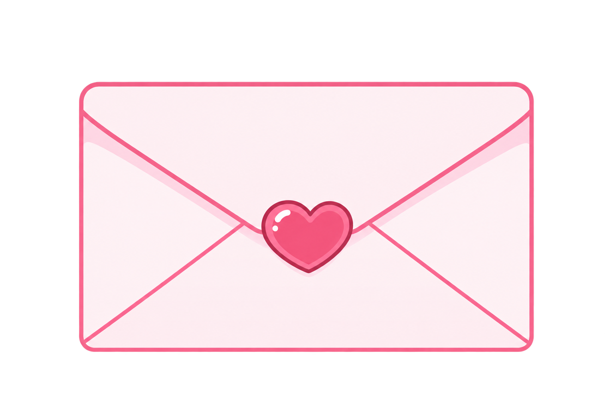
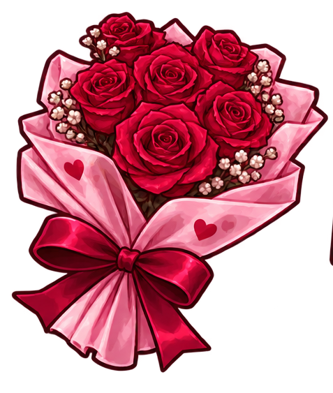

HELLO asawa ko HAPPY MONTHSARY!!!. YAY WE MADE IT its another month!! I just want to say that this month had been super chaotic and pretty stressful thank god I have you. I would love you thank you so everything you've done, thank you for always being there for me for being a person I can run to when im having trouble and thank you for making me experience thing that I thought I would never do. I would also love to use this moment to remind you how proud I im of you and of course you are one of my biggest flex in life WAHAHAHAHAH imagine having a cute, pretty, caring, playful, responsible, Hot 😏😏😏, and smart girlfriend but thank god i dont need to imagine it now WHAHAHAHAH, AND ALSO about those explicit things that we are doing always remember that you could say no Ha dont get pressure of those activities if you are uncomfortable, okayy your comfort is more valuable for me but if you like it then why not? WHAHAHAHAHAHAHHA kidding a side this month I realize that even if everything is choatic and full of mess I can still injoy it aslong as im with you and please asawa ko always remember that ill always be here for you no matter the time, whether or place. HAPYY MONTHSARY ASAWA KO!!! I hope us the best on these coming days months years decades and may our relationship stays this good and last until the end,i know i say this a lot but i just want you to know that I im so grateful to have these words cant fully Express my love for you but it is a way so ill say it LOVE YOU SO MUCHHH, ASAWA KO!!!!!

